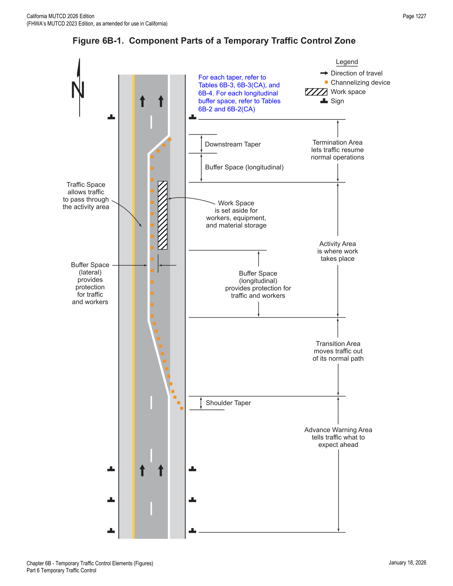
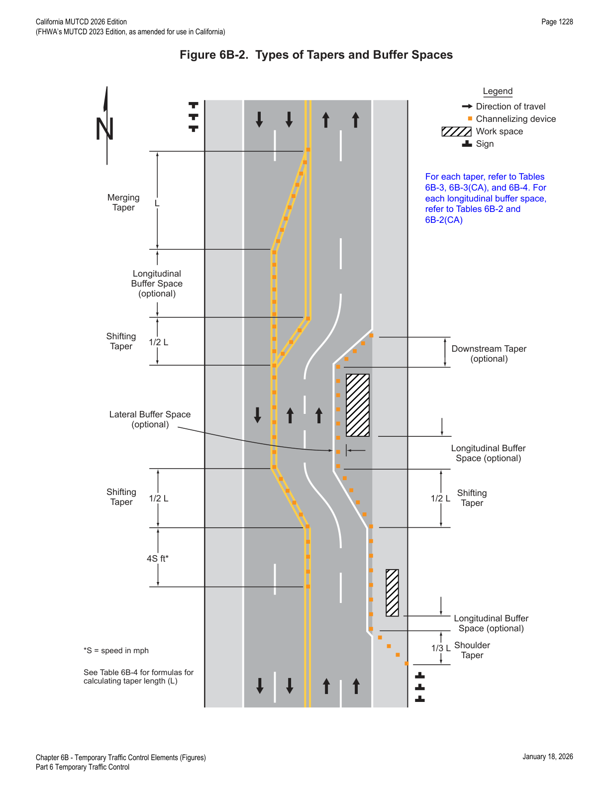
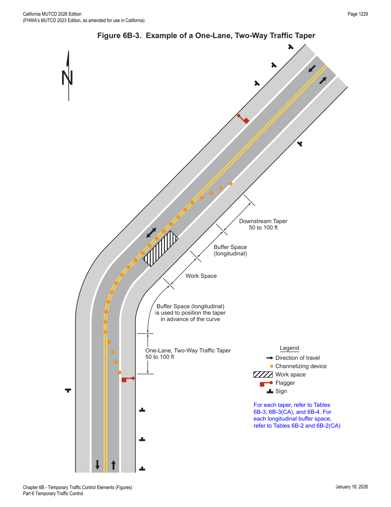

Part 6 · Temporary Traffic Control · Chapter 6B
Temporary Traffic Control Elements
The building blocks of every TTC zone: the TTC plan itself, the four functional areas (advance warning, transition, activity, termination), tapers, buffer spaces, and detours/diversions — with the sign-spacing, sight-distance, and taper-length tables engineers apply directly.
6B.01Temporary Traffic Control Plans
- 01Each TTC zone is different. Many variables — location of work, highway type, geometrics, vertical and horizontal alignment, intersections, interchanges, road user volumes, road user mix (motorists, bicyclists, and pedestrians), road vehicle mix (buses, trucks, and cars), and road user speeds — affect the needs of each zone. The goal of TTC in work zones is safety with minimum disruption to road users. The key factor in promoting TTC zone safety is proper judgment.
- 02A TTC plan describes TTC measures to be used for facilitating road users through a work zone or an incident area. TTC plans play a vital role in facilitating road user flow when a work zone, incident, or other event temporarily disrupts normal road user flow. Important auxiliary provisions that cannot conveniently be specified on project plans can easily be incorporated into Special Provisions within the TTC plan.
- 03TTC plans range in scope from being very detailed to simply referencing typical drawings contained in this Manual, standard approved highway agency drawings and manuals, or specific drawings contained in the contract documents. The degree of detail in the TTC plan depends entirely on the nature and complexity of the situation.
- 04During TTC activities, commercial vehicles might need to follow a different route from passenger vehicles because of bridge, weight, clearance, or geometric restrictions. Also, vehicles carrying hazardous materials might need to follow a different route from other vehicles. The Hazardous Materials and National Network signs are included in Sections 2B.67 and 2B.68, respectively.
- 05A TTC plan should be developed for planned activities that will affect road users. A TTC plan should be developed for unplanned and emergency situations where practicable.
- 06The TTC plan should start in the planning phase and continue through the design, construction, and restoration phases. The TTC plans and devices should follow the principles set forth in Part 6. The management of traffic incidents should follow the principles set forth in Chapter 6O.
- 07TTC plans should be prepared by persons knowledgeable (for example, trained and/or certified) about the fundamental principles of TTC and work activities to be performed. The design, selection, and placement of TTC devices for a TTC plan should be based on engineering judgment.
- 08Coordination should be made between adjacent or overlapping projects to check that duplicate signing is not used and to check compatibility of traffic control between adjacent or overlapping projects.
- 09Traffic control planning should be completed for all highway construction, utility work, maintenance operations, and incident management including minor maintenance and utility projects prior to occupying the TTC zone. Planning for all road users should be included in the process.
- 10For any planned special event that will have an impact on the traffic on any street or highway, a TTC plan should be developed in conjunction with and be approved by the agency or agencies that have jurisdiction over the affected roadways.
- 11Provisions for effective continuity of accessible circulation paths for pedestrians should be incorporated into the TTC plan.
- 12Provisions may be incorporated into the project bid documents that enable contractors to develop an alternate TTC plan.
- 13Modifications of TTC plans may be necessary because of changed conditions or a determination of better methods of safely and efficiently handling road users.
- 14An alternate or modified plan shall have the approval of the Engineer or the Engineer's designee of the public agency or authority having jurisdiction over the highway (or owner of site roadways open to public travel) prior to implementation.
- 15Provisions for effective continuity of transit service should be incorporated into the TTC planning process because often public transit buses cannot efficiently be detoured in the same manner as other vehicles (particularly for short-term maintenance projects). Where applicable, the TTC plan should provide for features such as accessible temporary bus stops, pull-outs, and satisfactory waiting areas for transit patrons, including persons with disabilities (see Section 8A.13 for additional light rail transit issues to consider for TTC).
- 16Provisions for effective continuity of railroad service and acceptable access to abutting property owners and businesses should also be incorporated into the TTC planning process.
Reduced Speed Limits in TTC Zones
- 17Reduced speed zoning (lowering the regulatory speed limit) should be avoided as much as practical because drivers will reduce their speeds only if they clearly perceive a need to do so.
- 18If reduced speed limits are used, they should be used only in the specific portion of the TTC zone where conditions or restrictive features are present. However, frequent changes in the speed limit should be avoided. A TTC plan should be designed so that vehicles can travel through the TTC zone with a speed limit reduction of no more than 10 mph.
- 19A reduction of more than 10 mph in the speed limit should be used only when required by restrictive features in the TTC zone. Where restrictive features justify a speed reduction of more than 10 mph, additional driver notification should be provided. The speed limit should be stepped down in advance of the location requiring the lowest speed, and additional TTC warning devices should be used.
- 19aThe justification for the reduced regulatory speed limit shall be documented in writing. Refer to CVC §§ 21367 and 22362.
- 20Research has demonstrated that large reductions in the speed limit, such as a 30 mph reduction, increase speed variance and the potential for crashes. Smaller reductions in the speed limit of up to 10 mph cause smaller changes in speed variance and lessen the potential for increased crashes. A reduction in the regulatory speed limit of only up to 10 mph from the normal speed limit has been shown to be more effective.
- 20aSee Section 2B.21 for Regulatory Speed Limit signs and Speed Zones.
- 20bSee Section 6G.08 for WORK ZONE (G20-5aP) plaque and END WORK ZONE SPEED LIMIT (R2-12) sign.
- 20cCVC § 22362 gives the agency having jurisdiction over a highway the authority to regulate the speed of traffic to provide protection for workers when at work on the roadway or within the right-of-way so close thereto as to be endangered by passing traffic, by placing appropriate signs indicating the limits of the restricted construction zone and the applicable speed limit at required locations.
- 20dUnder CVC § 21367, traffic may be regulated by warning signs, lights, appropriate control devices, or by a person or persons controlling and directing the flow of traffic; this gives the agency having jurisdiction over a highway the authority to regulate the speed of traffic whenever the traffic would endanger the safety of workers or the work would interfere with or endanger the movement of traffic through the area.
- 20eThe need for a long-term reduced speed limit within a TTC zone should be a decision made during the project development process. The need for a short-term reduced speed limit within a TTC zone, such as a maintenance activity, should be determined in advance of planned maintenance activities.
- 20fIf lowering speed limits for a short-term activity, such as a maintenance activity, signs lowering the speed limit by 10 mph or less may be placed in work zones that are not protected by a positive barrier and involve workers on foot or on equipment.
- 20gReducing speed limits in TTC zones should be avoided if traffic speeds can be reduced by other means. Speed restrictions should be imposed on the public only when necessary for worker or public safety.
- 20hWhere traffic obstructions exist only during the hours of construction, the speed zone signs shall be covered during non-working hours.
- 20iCVC § 22362 applies to the "when workers are present" condition, and signs need to be covered or removed when no work is in progress. Per CVC § 21367, the agency can "…regulate the movement of traffic…whenever the traffic would endanger the safety of workers or the work would interfere with or endanger the movement of traffic through the area." If obstructions would be present throughout the project duration, the signs would not need to be covered or removed. This would also apply to situations where the construction work changes the highway configuration, curvature, or elevation, making it necessary to post reduced speed limits.
- 20jThe Advisory Speed (W13-1P) plaque may be used in combination with various warning type signs to decrease speed at a particular location. See Section 6H.32.
- 20kTo preserve the effectiveness of the W13-1P plaque, it should not be used unless the condition to which it applies is immediate and will be experienced by all motorists.
- 20lConstruction zone speed limits should be reduced in sequential stages where an overall reduction of 15 mph or more is required. The first stage of the sequence should be a reduction of 10 mph, and the final stage reduction should be 10 mph or 5 mph, as necessary.
- 20mThe reduced speed limit shall not be less than 25 mph. Refer to CVC § 22362.
- 20nSpeed limit signs for reduced speed limits shall be posted only in areas where the traveling public is affected by TTC operations.
- 20oSigns shall be used only during working hours and removed or covered during non-working hours, unless the movement of traffic through the TTC zone is affected during non-working hours as well. Refer to CVC § 21367.
- 20pSigns shall be removed immediately following completion of the construction or change in the conditions for which they were installed. When the construction is completed or the speed restriction is no longer necessary, the formal speed zone orders shall be revoked.
- 21Chapter 6P contains typical applications (TAs) of TTC zones that are organized according to duration, location, type of work, and highway type. Table 6P-1 is an index of these typical applications. These typical applications include the use of various TTC methods, but do not include a layout for every conceivable work situation.
- 22Decisions regarding the selection of the most appropriate typical application to use as a guide for a specific TTC zone require an understanding of each situation. Although there are many ways of categorizing TTC zone applications, the typical applications illustrated in Chapter 6P are characterized by work duration, work location, work type, and highway type.
- 23Typical applications should be altered, when necessary, to fit the conditions of a particular TTC zone.
- 24Other devices may be added to supplement the devices shown in the typical applications. The sign spacings and taper lengths may be increased to provide additional time or space for driver response.
- 25Devices labeled as optional in the typical applications may be deleted.
- 26Formulating specific plans for TTC at traffic incidents is difficult because of the variety of situations that can arise.
- 27Well-designed TTC plans for planned special events will likely be developed from a combination of treatments from several of the typical applications.
In practice, the 10-mph "step" is the number engineers lean on hardest: any reduction beyond that requires documented justification and staged step-downs (10 mph, then 10 or 5 mph), and the reduced limit can never go below 25 mph.
6B.02Temporary Traffic Control Zones
- 01A TTC zone is an area of a highway where road user conditions are changed because of a work zone, an incident zone, or a planned special event through the use of TTC devices, uniformed law enforcement officers, or other authorized personnel.
- 02A work zone is an area of a highway with construction, maintenance, or utility work activities. A work zone is typically marked by signs, channelizing devices, barriers, pavement markings, and/or work vehicles. It extends from the first warning sign or high-intensity rotating, flashing, oscillating, or strobe lights on a vehicle to the END ROAD WORK sign or the last TTC device.
- 03An incident zone is an area of a highway where temporary traffic controls are imposed by authorized officials in response to a traffic incident (see Section 6O.01). It extends from the first warning device (such as a sign, light, or cone) to the last TTC device or to a point where road users return to the original lane alignment and are clear of the incident.
- 04A planned special event often creates the need to establish altered traffic patterns to handle the increased traffic volumes generated by the event. The size of the TTC zone associated with a planned special event can be small, such as closing a street for a festival, or can extend throughout a municipality for larger events. The duration of the TTC zone is determined by the duration of the planned special event.
6B.03Components of Temporary Traffic Control Zones
- 01A TTC zone is often divided into four areas as needed, based on engineering judgment: the advance warning area, the transition area, the activity area, and the termination area. Figure 6B-1 illustrates the four areas typically included in a TTC zone. These four areas are described in Sections 6B.04 through 6B.07.

6B.04Advance Warning Area
- 01The advance warning area is the section of highway where road users are informed about the upcoming transition and activity areas or incident area.
- 02The advance warning area may vary from a single sign or high-intensity rotating, flashing, oscillating, or strobe lights on a vehicle to a series of signs in advance of the TTC zone activity area.
- 03Typical distances for placement of advance warning signs on freeways and expressways should be longer because drivers are conditioned to uninterrupted flow. Therefore, the advance warning sign placement should extend on these facilities as far as ½ mile or more.
- 04On urban streets, the effective placement of the nearest warning sign to the TTC zone, in feet, should range from 4 to 8 times the speed limit in mph, with the high end of the range being used when speeds are relatively high. When two or more advance warning signs are used on higher-speed streets, such as major arterials, the advance warning area should extend a greater distance (see Table 6B-1).
- 05When a single advance warning sign is used (in cases such as low-speed residential streets), the advance warning area may be as short as 100 feet.
- 06Since rural highways are normally characterized by higher speeds, the effective placement of the first warning sign in feet should be substantially longer — from 8 to 12 times the speed limit in mph. Since two or more advance warning signs are normally used for these conditions, the advance warning area should extend 1,500 feet or more for open highway conditions (see Table 6B-1).
- 07The distances contained in Table 6B-1 are approximate, are intended for guidance purposes only, and should be applied with engineering judgment. These distances should be adjusted for field conditions, if necessary, by increasing or decreasing the recommended distances.
- 08The need to provide additional reaction time for a condition is one example of justification for increasing the sign spacing. Conversely, decreasing the sign spacing might be justified in order to place a sign immediately downstream of an intersection or major driveway such that traffic turning onto the roadway in the direction of the TTC zone will be warned of the upcoming condition.
- 09Advance warning may be eliminated when the activity area is sufficiently removed from the road users' path — behind a barrier, more than 2 feet behind the curb, or 15 feet or more from the edge of the traveled way — so that it does not interfere with the normal flow.
| Road Type | Distance between Signs — A | B | C |
|---|---|---|---|
| Urban (low speed) — 25 mph or less | 100 feet | 100 feet | 100 feet |
| Urban — 30 mph | 150 feet | 150 feet | 150 feet |
| Urban — 35 mph | 200 feet | 200 feet | 200 feet |
| Urban — 40 mph | 250 feet | 250 feet | 250 feet |
| Urban — 45 mph | 300 feet | 300 feet | 300 feet |
| Urban (high speed) — 50 mph or more | 350 feet | 350 feet | 350 feet |
| Rural | 500 feet | 500 feet | 500 feet |
| Expressway / Freeway | 1,000 feet | 1,500 feet | 2,640 feet |
Speed category is determined by the highway agency or owner of the site roadway open to public travel. Columns A, B, and C are the dimensions shown in Figures 6P-1 through 6P-54: A is the distance from the transition or point of restriction to the first sign; B is the distance between the first and second signs; C is the distance between the second and third signs (the "first sign" is closest to the TTC zone; the "third sign" is furthest upstream). Speeds are the posted speed limit, the off-peak 85th-percentile speed prior to work starting, or another anticipated operating speed in mph. Refer to FHWA's List of Known Errors and Section 1A.04 for a noted error in the table footnotes.
6B.05Transition Area
- 01The transition area is that section of highway where road users are redirected out of their normal path. Transition areas usually involve strategic use of tapers, which because of their importance are discussed separately in detail.
- 02Except for mobile operations, when redirection of the road users' normal path is required, road users shall be directed from the normal path to a new path with appropriate channelizing devices, traffic control devices, and/or TTC methods.
- 03Because it is impracticable in mobile operations to redirect the road users' normal path with stationary channelization, more dominant vehicle-mounted traffic control devices, such as arrow boards, portable changeable message signs, and high-intensity rotating, flashing, oscillating, or strobe lights, may be used instead of channelizing devices to establish a transition area.
6B.06Activity Area
- 01The activity area is the section of the highway where the work activity takes place. It is comprised of the work space, the traffic space, and the buffer space.
- 02The work space is that portion of the highway closed to road users and set aside for workers, equipment, and material, and a shadow vehicle if one is used upstream. Work spaces are usually delineated for road users by channelizing devices or, to exclude vehicles and pedestrians, by temporary barriers.
- 03The work space may be stationary or may move as work progresses.
- 04Since there might be several work spaces (some even separated by several miles) within the project limits, each work space should be adequately signed to inform road users and reduce confusion.
- 05The traffic space is the portion of the highway in which road users are routed through the activity area.
- 06The buffer space is a lateral and/or longitudinal area that separates road user flow from the work space or an unsafe area, and might provide some recovery space for an errant vehicle.
- 07Neither work activity nor storage of equipment, vehicles, or material should occur within a buffer space.
- 08Buffer spaces may be positioned either longitudinally or laterally with respect to the direction of road user flow. The activity area may contain one or more lateral or longitudinal buffer spaces.
- 09A longitudinal buffer space may be placed in advance of a work space.
- 10The longitudinal buffer space should also be used to separate opposing road user flows that use portions of the same traffic lane, as shown in Figure 6B-2.
- 12Typically, the buffer space is formed as a traffic island and defined by channelizing devices.
- 13When a shadow vehicle, arrow board, or changeable message sign is placed in a closed lane in advance of a work space, only the area upstream of the vehicle, arrow board, or changeable message sign constitutes the buffer space.
- 15The width of a lateral buffer space should be determined by engineering judgment.
- 16When work occurs on a high-volume, highly-congested facility, a vehicle storage or staging space may be provided for incident response and emergency vehicles (for example, tow trucks and fire apparatus) so that these vehicles can respond quickly to road user incidents.
| Speed | Distance |
|---|---|
| 20 mph | 115 feet |
| 25 mph | 155 feet |
| 30 mph | 200 feet |
| 35 mph | 250 feet |
| 40 mph | 305 feet |
| 45 mph | 360 feet |
| 50 mph | 425 feet |
| 55 mph | 495 feet |
| 60 mph | 570 feet |
| 65 mph | 645 feet |
| 70 mph | 730 feet |
| 75 mph | 820 feet |
| Speed (mph) | −3% (feet) | −6% (feet) | −9% (feet) |
|---|---|---|---|
| 20 | 116 | 120 | 126 |
| 25 | 158 | 165 | 173 |
| 30 | 205 | 215 | 227 |
| 35 | 257 | 271 | 287 |
| 40 | 315 | 333 | 354 |
| 45 | 378 | 400 | 427 |
| 50 | 446 | 474 | 507 |
| 55 | 520 | 553 | 593 |
| 60 | 598 | 638 | 686 |
| 65 | 682 | 728 | 785 |
| 70 | 771 | 825 | 891 |
| 75 | 866 | 927 | 1003 |
Source: Exhibit 3-2, AASHTO's A Policy on Geometric Design on Highways and Streets, 2001, p.115.
6B.07Termination Area
- 01The termination area is the section of the highway where road users are returned to their normal driving path. The termination area extends from the downstream end of the work area to the last TTC device such as END ROAD WORK signs, if posted.
- 02An END ROAD WORK sign, a Speed Limit sign, or other signs may be used to inform road users that they can resume normal operations.
- 03A longitudinal buffer space may be used between the work space and the beginning of the downstream taper.
6B.08Tapers
- 01Tapers may be used in both the transition and termination areas. Whenever tapers are to be used in close proximity to an interchange ramp, crossroads, curves, or other influencing factors, the length of the tapers may be adjusted.
- 02Tapers are created by using a series of channelizing devices and/or pavement markings to move traffic out of or into the normal path. Types of tapers are shown in Figure 6B-2.
- 03Longer tapers are not necessarily better than shorter tapers (particularly in urban areas with characteristics such as short block lengths or driveways) because extended tapers tend to encourage sluggish operation and to encourage drivers to delay lane changes unnecessarily. The test concerning adequate lengths of tapers involves observation of driver performance after TTC plans are put into effect.
- 05A merging taper requires the longest distance because drivers are required to merge into common road space.
- 06A merging taper should be long enough to enable merging drivers to have adequate advance warning and sufficient length to adjust their speeds and merge into an adjacent lane before the downstream end of the transition.
- 07A shifting taper is used when a lateral shift is needed. When more space is available, a longer than minimum taper distance can be beneficial. Changes in alignment can also be accomplished by using horizontal curves designed for normal highway speeds.
- 09A shoulder taper might be beneficial on a high-speed roadway where shoulders are part of the activity area and are closed, or when improved shoulders might be mistaken as a driving lane. In these instances, the same type, but abbreviated, closure procedures used on a normal portion of the roadway can be used.
- 11A downstream taper might be useful in termination areas to provide a visual cue to the driver that access is available back into the original lane or path that was closed.
- 12If used, a downstream taper should have a minimum length of 50 feet and a maximum length of 100 feet with devices placed at a spacing of approximately 20 feet.
- 13The one-lane, two-way taper is used in advance of an activity area that occupies part of a two-way roadway in such a manner that a portion of the road is used alternately by traffic in each direction.
- 14A taper having a minimum length of 50 feet and a maximum length of 100 feet with channelizing devices at approximately 20-foot spacing should be used to guide traffic into the one-lane section, and a downstream taper should be used to guide traffic back into their original lane.
- 15An example of a one-lane, two-way traffic taper is shown in Figure 6B-3.
- 16On State highways, Caltrans' Standard Plans for Traffic Control Systems (Standard Plans T9 through T27) should be used. See Section 1A.05 for information regarding this publication.


| Type of Taper | Taper Length |
|---|---|
| Merging Taper | at least L |
| Shifting Taper | at least 0.5 L |
| Shoulder Taper | at least 0.33 L |
| One-Lane, Two-Way Traffic Taper | 50 feet minimum, 100 feet maximum |
| Downstream Taper | 50 feet minimum, 100 feet maximum |
Use Table 6B-4 to calculate L.
| Speed S (mph) | Merging L (feet) | Shifting L/2 (feet) | Shoulder L/3 (feet) | Downstream (feet) |
|---|---|---|---|---|
| 20 | 80 | 40 | 27 | 50 |
| 25 | 125 | 63 | 42 | 50 |
| 30 | 180 | 90 | 60 | 50 |
| 35 | 245 | 123 | 82 | 50 |
| 40 | 320 | 160 | 107 | 50 |
| 45 | 540 | 270 | 180 | 50 |
| 50 | 600 | 300 | 200 | 50 |
| 55 | 660 | 330 | 220 | 50 |
| 60 | 720 | 360 | 240 | 50 |
| 65 | 780 | 390 | 260 | 50 |
| 70 | 840 | 420 | 280 | 50 |
| 75 | 900 | 450 | 300 | 50 |
Speed is the posted speed limit, the off-peak 85th-percentile speed prior to work starting, or the anticipated operating speed in mph. For offsets other than 12 feet, use the merging taper length formula: for speeds of 40 mph or less, L = WS²/60; for speeds of 45 mph or more, L = WS, where L = taper length in feet, W = width of offset in feet, S = speed in mph as defined above. The maximum downstream taper length is 100 feet (see Section 6B.08).
| Speed (S) | Taper Length (L) in feet |
|---|---|
| 40 mph or less | L = WS² / 60 |
| 45 mph or more | L = WS |
Where L = taper length in feet, W = width of offset in feet, S = posted speed limit, or off-peak 85th-percentile speed prior to work starting, or the anticipated operating speed in mph.
In practice, the merging taper is almost always the longest and most safety-critical taper in a plan since it forces drivers to complete a lane change before running out of road — always compute L from Table 6B-4 (or read it directly from Table 6B-3(CA) for a 12-ft offset) rather than defaulting to a rule of thumb.
6B.09Detours and Diversions
- 01A detour is a temporary rerouting of road users onto an existing highway in order to avoid a TTC zone.
- 02Detours should be clearly signed over their entire length so that road users can easily use existing highways to return to the original highway.
- 03A diversion is a temporary rerouting of road users onto a temporary highway or alignment placed around the work area.
- 04The detour route shall be evaluated for height, weight, and size restrictions. Appropriate signs shall be posted along the route to advise road users of any restrictions. Refer to CVC § 21363 for detour signs.
- 05Advance signs or changeable message signs (CMS) may be necessary to give trucks an opportunity to turn around and retrace their path or select another route.
★ Key Takeaways — Chapter 6B
- Every TTC zone can be divided into four functional areas — advance warning, transition, activity, and termination (Figure 6B-1) — and each has distinct design guidance.
- Advance warning sign spacing scales with road type and speed: 100–350 ft on urban streets, 500 ft on rural highways, and 1,000–2,640 ft on expressways/freeways (Table 6B-1).
- Reduced speed limits in TTC zones should be minimized, capped at a 10-mph reduction unless restrictive features justify more, staged down in 10/5-mph increments, never set below 25 mph, documented in writing, and covered/removed when not in effect (CVC §§ 21367, 22362).
- Five taper types exist — merging (L), shifting (½ L), shoulder (⅓ L), downstream (50–100 ft), and one-lane two-way (50–100 ft) — with L computed from the formulas in Table 6B-4 or read from Table 6B-3(CA) for a 12-ft offset.
- Buffer spaces (lateral and longitudinal) protect traffic and workers from the work space and must never be used for work activity, equipment, or material storage.
- Detours reroute traffic onto existing highways; diversions use a temporary alignment around the work — detour routes must be checked for height/weight/size restrictions per CVC § 21363.